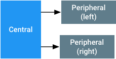

Hearing aid devices (HA) can have improved accessibility on Android-powered mobile devices by using connection-oriented L2CAP channels (CoC) over Bluetooth Low Energy (BLE). CoC uses an elastic buffer of several audio packets to maintain a steady flow of audio, even in the presence of packet loss. This buffer provides audio quality for hearing aid devices at the expense of latency.
The design of CoC references the Bluetooth Core Specification Version 5 (BT). To stay aligned with the core specifications, all multi-byte values on this page shall be read as little-endian.
Terminology
- Central - the Android device that scans for advertisements over Bluetooth.
- Peripheral - the hearing instrument that sends advertisement packets over Bluetooth.
Network topology and system architecture
When using CoC for hearing aids, the network topology assumes a single central and two peripherals, one left and one right, as seen in Figure 1. The Bluetooth audio system views the left and right peripherals as a single audio sink. If a peripheral is missing, due to a monaural fit or a loss of connection, then the central mixes the left and right audio channel and transmits the audio to the remaining peripheral. If the central loses connection to both peripherals, then the central considers the link to the audio sink lost. In those cases, the central routes audio to another output.

Figure 1. Topology for pairing hearing aids with
Android mobile devices using CoC over BLE
When the central is not streaming audio data to the peripheral and can maintain a BLE connection, the central should not disconnect from the peripheral. Maintaining the connection allows the data communication to the GATT server residing on the peripheral.
When pairing and connecting hearing devices, the central shall:
- Keep track of the more recent left and right peripherals paired.
- Assume the peripherals are in use if a valid pairing exists. The central shall attempt to connect or reconnect with the paired device when the connection is lost.
- Assume the peripherals are no longer in use if a pairing is deleted.
In the cases above, pairing refers to the action of registering a set of hearing aids with a given UUID and left/right designators in the OS, not the Bluetooth pairing process.
System requirements
To properly implement CoC for a good user experience, the Bluetooth systems in the central and peripheral devices shall:
- implement a compliant BT 4.2 or higher controller. LE Secure Connections is highly recommended.
- have the central support at least 2 simultaneous LE links with parameters as described in Audio packet format and timing.
- have the peripheral support at least 1 LE link with the parameters described in Audio packet format and timing.
- have an LE credit based flow control [BT Vol 3, Part A, Sec 10.1]. Devices shall support an MTU and MPS size of at least 167 bytes on CoC and be able to buffer up to 8 packets.
- have an LE data length extension [BT Vol 6, Part B, Sec 5.1.9] with a payload of at least 167 bytes.
-
have the central device support the HCI LE Connection Update Command
and comply with the non-zero
maximum_CE_Lengthandminimum_CE_Lengthparameters. - have the central maintain the data throughput for two LE CoC connections to two different peripherals with the connection intervals and payload sizes in Audio packet format and timing.
-
have the peripheral set the
MaxRxOctetsandMaxRxTimeparameters in theLL_LENGTH_REQorLL_LENGTH_RSPframes to be the smallest required values that are necessary for these specifications. This lets the central optimize its time scheduler when calculating the amount of time needed to receive a frame.
It is strongly recommended that the central and peripheral support 2MB PHY as specified in the BT 5.0 specification. The central shall support audio links of at least 64 kbit/s on both 1M and 2M PHYs. The BLE long range PHY shall not be used.
CoC uses the standard Bluetooth mechanisms for link layer encryption and frequency hopping.
ASHA GATT services
A peripheral shall implement the Audio Streaming for Hearing Aid (ASHA) GATT server service described below. The peripheral shall advertise this service when in general discoverable mode to let the central recognize an audio sink. Any LE audio streaming operations shall require encryption. The BLE audio streaming consists of the following characteristics:
| Characteristic | Properties | Description |
|---|---|---|
| ReadOnlyProperties | Read | See ReadOnlyProperties. |
| AudioControlPoint | Write and Write without Response | Control point for audio stream. See AudioControlPoint. |
| AudioStatusPoint | Read/Notify |
Status report field for the audio control point. Opcodes are:
|
| Volume | Write without Response | Byte between -128 and 0 indicating volume in dB. -128 shall be interpreted as mute. 0 dB with a rail-to-rail sine tone streamed shall represent a 100 dBSPL input equivalent on the hearing instrument. The central shall stream in nominal full scale and use this variable to set the desired presentation level in the peripheral. |
| LE_PSM_OUT | Read | PSM to use for connecting the audio channel. To be picked from the dynamic range [BT Vol 3, Part A, Sec 4.22] |
The UUIDs assigned to the service and characteristics:
Service UUID: {0xFDF0}
| Characteristic | UUID |
|---|---|
| ReadOnlyProperties | {6333651e-c481-4a3e-9169-7c902aad37bb} |
| AudioControlPoint | {f0d4de7e-4a88-476c-9d9f-1937b0996cc0} |
| AudioStatus | {38663f1a-e711-4cac-b641-326b56404837} |
| Volume | {00e4ca9e-ab14-41e4-8823-f9e70c7e91df} |
| LE_PSM_OUT | {2d410339-82b6-42aa-b34e-e2e01df8cc1a} |
In addition to the ASHA GATT service, the peripheral shall also implement the Device Information Service to let the central detect the manufacturer names and device names of the peripheral.
ReadOnlyProperties
ReadOnlyProperties have the following values:
| Byte | Description |
|---|---|
| 0 | Version - must be 0x01 |
| 1 | See DeviceCapabilities. |
| 2-9 | See HiSyncId. |
| 10 | See FeatureMap. |
| 11-12 | RenderDelay. This is the time, in milliseconds, from when the peripheral receives an audio frame until the peripheral renders the output. These bytes can be used to delay a video to synchronize with the audio. |
| 13-14 | Reserved for future use. Initialize to zeros. |
| 15-16 | Supported Codec IDs. This is a bitmask of supported codec IDs. A 1 in a bit location corresponds to a supported codec. For example, 0x0002 indicates that G.722 at 16 kHz is supported. All other bits shall be set to 0. |
DeviceCapabilities
| Bit | Description |
|---|---|
| 0 | Device side (Left: 0, Right: 1). |
| 1 | Monaural (0) / Binaural (1). Indicates whether the device is stand-alone and receives mono data, or if the device is part of a set. |
| 2-7 | Reserved (set to 0). |
HiSyncID
This field must be unique for all binaural devices but it must be the same for the left and right set.
| Byte | Description |
|---|---|
| 0-1 | ID of the manufacturer. It is the Company Identifiers assigned by BTSIG. |
| 2-7 | Unique ID identifying the hearing aid set. This ID must be set to the same on both the left and the right peripheral. |
FeatureMap
| Bit | Description |
|---|---|
| 0 | LE CoC audio output streaming supported (Yes/No). |
| 1-7 | Reserved (set to 0). |
Codec IDs
If the bit is set, then that particular codec is support.
| ID / Bit number | Codec and sample rate | Required bitrate | Frame time | Mandatory on central (C) or peripheral (P) |
|---|---|---|---|---|
| 0 | Reserved | Reserved | Reserved | Reserved |
| 1 | G.722 @ 16 kHz | 64 kbit/s | Variable | C and P |
|
2-15 are reserved. 0 is also reserved. |
||||
AudioControlPoint
This control point cannot be used when the LE CoC is closed. See Starting and stopping an audio stream for the procedure description.
| Opcode | Arguments | Description |
|---|---|---|
1 «Start» |
|
Instructs the peripheral to reset the codec and start the
playback of frame 0. The codec field indicates the codec ID to use
for this playback.
For example, the codec field is "1" for G.722 at 16k Hz. The audio type bit field indicates the audio type(s) present in the stream:
The peripheral shall not request connection updates before a «Stop» opcode has been received.
|
2 «Stop» |
None | Instructs the peripheral to stop rendering audio. A new audio setup sequence should be initiated following this stop in order to render audio again. |
3 «Status» |
|
Informs the connected peripheral that there is a status update on the
other peripheral. The connected field indicates the type of update:
|
Advertisements for ASHA GATT Service
The service UUID must be in the advertisement packet. In either the advertisement or the scan response frame, the peripherals must have a Service Data:
| Byte offset | Name | Description |
|---|---|---|
| 0 | AD Length | >= 0x09 |
| 1 | AD Type | 0x16 (Service Data - 16-bits UUID) |
| 2-3 | Service UUID |
0xFDF0 (little-endian) Note: This is a temporary ID. |
| 4 | Protocol Version | 0x01 |
| 5 | Capability |
|
| 6-9 | Truncated HiSyncID | Four least significant bytes of the HiSyncId. These bytes should be the most random part of the ID. |
The peripherals must have a Complete Local Name data type that indicates the name of the hearing aid. This name will be used on the mobile device's user interface so the user can select the right device. The name shall not indicate the left or right channel since this information is provided in DeviceCapabilities.
If the peripherals put the name and ASHA service data types in the same frame type (ADV or SCAN RESP), then the two data types ("Complete Local Name" and "Service Data for ASHA service") shall appear in the same frame. This lets the mobile device scanner get both data in the same scan result.
During the initial pairing, it is important that the peripherals advertise at a rate fast enough to let the mobile device quickly discover the peripherals and bond to them.
Synchronizing left and right peripheral devices
To work with Bluetooth on Android mobile devices, peripheral devices are responsible for ensuring that they are synchronized. The playback on the left and right peripheral devices needs to be synchronized in time. Both peripheral devices must play back audio samples from the source at the same time.
Peripheral devices can synchronize their time by using a sequence number prepended to each packet of the audio payload. The central guarantees that audio packets that are meant to be played at the same time on each peripheral have the same sequence number. The sequence number increments by one after each audio packet. Each sequence number is 8-bit long, so the sequence numbers will repeat after 256 audio packets. Since each audio packet size and sample rate is fixed for each connection, the two peripherals can deduce the relative playing time. For more information about the audio packet, see Audio packet format and timing.
The central assists by providing triggers to the binaural devices when the synchronization may need to happen. These triggers inform each peripheral of the status of its paired peripheral device whenever there is an operation that may affect the synchronization. The triggers are:
-
As part of the
«Start»command of AudioControlPoint, the current connection state of the other side of the binaural devices is given. -
Whenever there is a connection, disconnection, or
connection parameter update operation on one peripheral,
the
«Status»command of AudioControlPoint is sent to the other side of the binaural devices.
Audio packet format and timing
Packing audio frames (blocks of samples) into packets lets the hearing instrument derive timing from the link layer timing anchors. To simplify the implementation:
- An audio frame should always match the connection interval in time. For example, if the connection interval is 20ms and sample rate is 16 kHz, then the audio frame shall contain 320 samples.
- Sample rates in the system are restricted to multiples of 8kHz to always have an integer number of samples in a frame regardless of the frame time or the connection interval.
- A sequence byte shall prepend audio frames. The sequence byte shall be counting with wrap-around and allow the peripheral to detect buffer mismatch or underflow.
-
An audio frame shall always fit into a single LE packet. The audio
frame shall be sent as a separate L2CAP packet. The size of the LE
LL PDU shall be:
audio payload size + 1 (sequence counter) + 6 (4 for L2CAP header, 2 for SDU) - A connection event should always be large enough to contain 2 audio packets and 2 empty packets for an ACK to reserve bandwidth for retransmissions. Note that the audio packet may be fragmented by the central's Bluetooth controller. The peripheral must be able to receive more than 2 fragmented audio packets per connection event.
To give the central some flexibility, the G.722 packet length is not specified. The G.722 packet length can change based on the connection interval that the central sets.
The G.722 output octet format references the Rec. ITU-T G.722 (09/2012) section 1.4.4 "Multiplexer"
For all the codecs that a peripheral supports, the peripheral shall support the connection parameters below. This is a non-exhaustive list of configurations that the central can implement.
| Codec | Bitrate | Connection interval | CE Length (1M/2M PHY) | Audio payload size |
|---|---|---|---|---|
| G.722 @ 16 kHz | 64 kbit/s | 20 ms | 5000/3750 us | 160 bytes |
Starting and stopping an audio stream
Before starting an audio stream, the central queries the peripherals and establishes a common denominator codec. The stream setup then proceeds through the following sequence:
- PSM, and optionally, RenderDelay is read. These values may be cached by the central.
- CoC L2CAP channel is opened – the peripheral shall grant 8 credits initially.
- A connection update is issued to switch the link to the parameters required for the chosen codec. The central may do this connection update before the CoC connection in the previous step.
- Both the central and the peripheral host wait for the update complete event.
-
Restart the audio encoder, and reset the packet sequence count to 0.
A
«Start»command with the relevant parameters is issued on the AudioControlPoint. The central waits for a successful status notification of the prior«Start»command from the peripheral before streaming. This wait gives the peripheral time to prepare its audio playback pipeline. During audio streaming, the replica should be available at every connection event even though the current replica latency may be non-zero. - The peripheral takes the first audio packet from its internal queue (sequence number 0) and plays it.
The central issues the «Stop» command to close the audio stream. After this command, the peripheral does not need to be available on every connection event. To restart the audio streaming, go through the above sequence, starting from step 5. When the central is not streaming audio, it should still maintain a LE connection for GATT services.
The peripheral shall not issue a connection update to the central. To save power, the central may issue a connection update to the peripheral when it is not streaming audio.